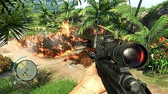

Gameplay

|
-
Far Cry 3 is a first-person shooter set on the fictional Rook Islands, a tropical archipelago somewhere in the Pacific, controlled by pirates and mercenaries.[1]Players control Jason Brody and can approach missions and objectives in a variety of ways. They can kill enemies by utilizing firearms such as assault rifles, sniper rifles, grenade launchers, rocket launchers, and explosives like land mines and grenades.[2] Alternatively, players can utilize stealth to avoid the attention of enemies. For instance, players can scout an enemy's outpost by using a camera to mark the locations of enemies,[3] or toss rocks to distract enemies.[4] The stealth approach, which can be done by using silenced weapons and combat knives,[5] can prevent enemies from triggering alarms which call for reinforcements.[6] Skills are collected by gaining experience from completing missions and killing enemies, and are unlocked in three skill trees, themed as the Spider, the Heron, and the Shark. Each skill tree upgrades different aspects of Jason's abilities, with the Spider upgrading his stealth takedowns and hunting skills, the Shark upgrading assault takedowns and health, and the Heron upgrading his long-range takedowns and mobility.[7] As skills are collected, a tribal tattoo on Jason's forearm grows correspondingly.[8]
Rook Islands is an open world in which players can explore freely. Jason can travel using a variety of vehicles including dune buggies, all-terrain vehicles, cargo trucks, jet skis, boats and hang gliding. Later in the game, players will find a wingsuit that Jason can wear.[9] Jason will encounter different friendly settlements where he can shop for weapons and materials[10] and complete side missions including hunting quests and assassination missions.[3] Rook Islands is inhabited by a wide variety of wildlife including leopards and sharks, and the game's artificial intelligence (AI) enables the wildlife to interact with each other to simulate a realistic ecosystem.[11] By hunting different animals and harvesting their corpses, players gain materials necessary for crafting new items such as weapon holsters and ammo pouches.[12][13] Players can hoard green plants to produce syringes, which heal Jason when his health depletes during combat scenarios[12] or provide other gameplay advantages.[14] Players can climb different radio towers and remove their scramblers.[15] When they are removed, areas of the map are opened up, various points of interest are highlighted and players will unlock a new weapon and gain access to a supply-run side mission,[4] a timed quest in which players need to deliver medicines as quickly as possible from one place to another.[10] As pirates control the island, players can infiltrate and liberate numerous enemy outposts. Once an outpost is retaken, it becomes a base for the rebels which unlocks additional side missions for players.[16] It also become a location where players can quickly fast travel to and trade with vendors.[6] A patch was later released to allow players to reset outposts.[17] When exploring the game's world, unscripted events may occur, such as Jason being attacked by wildlife or pirate patrols.[18][19] Players can complete Trials of the Rakyat missions, which are timed combat challenges;[20] join different minigames including poker, knife throwing and shooting challenges;[21] and gather different collectibles such as relics,[22] letters,[23] and memory cards.[24] The game features a four-player cooperative multiplayer mode, which is set six months before the events of the main game. The mode features five different classes: Warrior, Rusher, Deadeye, Saboteur or Bodyguard. Players can customize each class's loadouts and weapons.[25] In multiplayer, players can activate "battle cry", which boosts the team's health, accuracy and running speed.[26] The game includes competitive multiplayer modes including Team Deathmatch and Domination, in which two teams compete against each other to capture control points.[27] There is also Transmission, a Domination variant in which the control points are radio transmitters that change location. In Firestorm, a team needs to ignite two fuel dumps held by another team while protecting their own from being set on fire.[26] Killing enemies successively, reviving team members and utilizing battle cry grant players Team Support Points, which can be used to unlock perks like "psyche gas" which causes enemies to hallucinate all players as shadows.[28] The game features a map editor that allows users to create and share custom content.[29] Players can create their maps by customizing landscapes, and by placing buildings, trees, vehicles and units controlled by AI.[30]
|